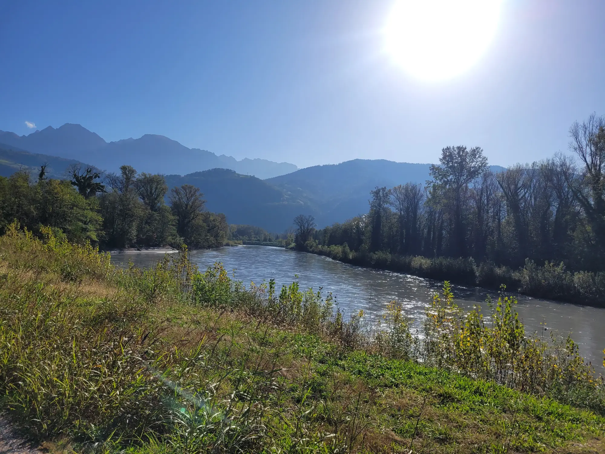

Cours enfants
Apprendre à rouler, en confiance
Des cours ludiques et progressifs, en petit groupe ou en cours particulier, pour que votre enfant gagne en équilibre, en assurance et en autonomie.

Selon l'âge
Chaque enfant avance à son rythme. Ces repères servent à composer les groupes, pas à mettre la pression.
Dès 4 ans
Premiers tours de roue
L'équilibre d'abord, sans pédales, puis les premiers coups de pédale et le freinage. Des séances courtes, sous forme de jeux.
De 6 à 11 ans
Savoir rouler
Dans l'esprit du programme national « Savoir rouler à vélo » : maîtriser son vélo, puis découvrir la circulation, jusqu'aux premiers trajets accompagnés.
Dès 11 ans
Rouler en autonomie
Aller au collège à vélo, préparer un itinéraire, rouler en groupe : gagner la confiance qui permet de partir seul.
La progression
Cinq étapes, du parc au premier trajet en ville.
Trouver l'équilibre
Sans pédales d'abord, pour sentir le vélo et prendre confiance.
Pédaler et freiner
Démarrer seul, garder sa trajectoire, s'arrêter où on l'a décidé.
Regarder et anticiper
Tourner la tête, tendre le bras, contourner un obstacle sans perdre l'équilibre.
Rouler à plusieurs
Garder sa distance, suivre un parcours, respecter des consignes simples.
Premiers trajets
Pistes cyclables, carrefours et panneaux, accompagné d'un adulte.

Infos pratiques
Pour bien commencer
- DuréeDe 45 minutes à 1 h 30 selon l'âge.
- FormatsCours particulier, petit groupe, ou stage pendant les vacances.
- LieuUn espace calme et protégé pour débuter, puis les pistes cyclables.
- À prévoirUn vélo à sa taille, un casque obligatoire, des gants et des vêtements confortables.
- Les parentsBienvenus pour regarder, et invités à rouler avec nous pour les premiers trajets.
Les questions des parents
Mon enfant a peur de tomber, est-ce un problème ?
Pas du tout. On commence sans pédales et très près du sol, pour que la confiance vienne avant la vitesse. On ne passe à l'étape suivante que lorsque l'enfant se sent prêt.
Faut-il retirer les petites roues avant le premier cours ?
Pas nécessairement : on s'en occupe ensemble pendant le cours.
Mon enfant n'a pas de vélo à sa taille.
Dites-le-moi : on cherche une solution ensemble, y compris par la location.
Proposez-vous des cours dans les écoles ?
Oui, sur demande des écoles et des centres de loisirs. Voir la page Groupes et structures.
Inscrire un enfant
Dites-moi son âge et où il en est, je vous propose le format qui lui convient.